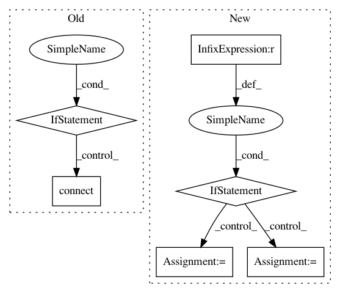

884525df33ffb939b354177d6f99ead8ccb28840,homeassistant/components/media_player/plex.py,,setup_plexserver,#Any#Any#Any#,58
Before Change
// configuration, let"s use those, not to break anything
// We may want to use this method as option when HA"s
// configuration options increase
if config.get("name", ""):
name = config.get("name", "")
user = config.get("user", "")
password = config.get("password", "")
plexuser = MyPlexUser.signin(user, password)
plexserver = plexuser.getResource(name).connect()
// Discovery mode. Parse config file, attempt conenction
// Request configuration on connect fail
else:
print("WEEEEJ, host: %s"%host)
try:
// Get configuration from config file
// FIXME unauthenticated plex servers dont require
// a token, so config file isn"t mandatory
with open(conf_file,"r") as f:
conf_dict = eval(f.read())
plexserver = PlexServer(
"http://%s"%host,
conf_dict.get(host)["token"])
except IOError: // File not found
request_configuration(host, hass, add_devices_callback)
return
except NotFound: // Wrong host was given or need token?
_LOGGER.exception("Error connecting to the Hue bridge at %s", host)
return
plex_clients = {}
plex_sessions = {}
@util.Throttle(MIN_TIME_BETWEEN_SCANS, MIN_TIME_BETWEEN_FORCED_SCANS)
After Change
return
conf_dict = {}
if host == None:
// Called by module inclusion, let"s only use config
host,token = conf_dict.popitem()
token = token["token"]
elif host not in conf_dict.keys():
// Not in config
conf_dict[host] = { "token" : "" }
token = None
_LOGGER.info("Connecting to: htts://%s using token: %s" %
(host, token))
try:
plexserver = plexapi.PlexServer("http://%s"%host, token)
In pattern: SUPERPATTERN
Frequency: 3
Non-data size: 6
Instances
Project Name: home-assistant/home-assistant
Commit Name: 884525df33ffb939b354177d6f99ead8ccb28840
Time: 2015-10-25
Author: tom.duijf@gmail.com
File Name: homeassistant/components/media_player/plex.py
Class Name:
Method Name: setup_plexserver
Project Name: danforthcenter/plantcv
Commit Name: 25bdfd7ca876bf714309c84648317b4a3f7227ce
Time: 2017-04-05
Author: noahfahlgren@gmail.com
File Name: plantcv-pipeline.py
Class Name:
Method Name: db_connect
Project Name: keras-team/keras
Commit Name: 65e4f94e45f32d9cbe99337d74ed9c1ebad3412a
Time: 2015-06-03
Author: jason.ramapuram@viasat.com
File Name: keras/layers/core.py
Class Name: AutoEncoder
Method Name: __init__